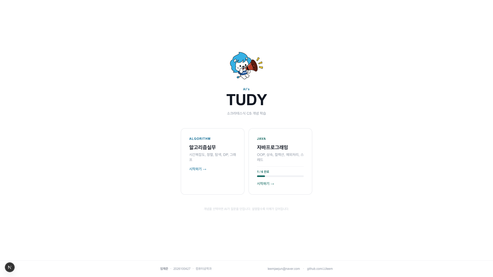
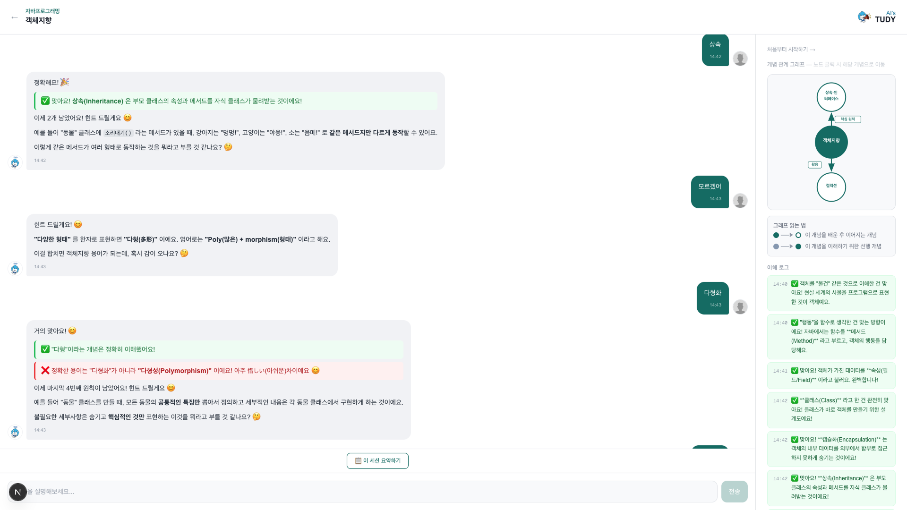
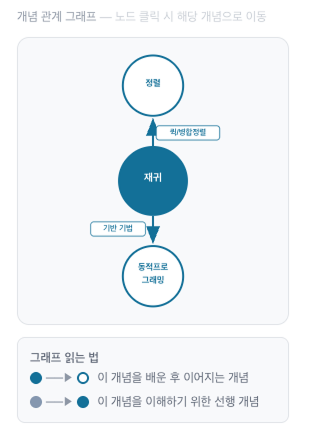

나는 현직 소프트웨어 개발자이면서 HYCU 사이버대학교 컴퓨터공학과에 재학 중이다. 업무상 새로운 기술을 빠르게 익혀야 하고, AI 도구도 일상적으로 쓴다. 그런데 기말고사 시즌이 되면 이상한 경험이 반복됐다.
원인을 분석해봤다. 기존 AI 활용 방식은 이랬다: "퀵 정렬이 뭐야?" → AI가 친절하게 설명 → 읽으면 이해된 것 같음 → 며칠 후 기억에 남은 게 없음. 이것은 수동적 학습(Passive Learning)의 전형적인 한계다. 듣고 읽는 행위만으로는 장기 기억이 형성되지 않는다.
반면, 누군가에게 개념을 설명하려 할 때 우리는 아는 것과 모르는 것의 경계를 정확히 인식하게 된다. 심리학에서는 이를 Protégé Effect(제자 효과)라 부른다 — 가르치기 위해 준비하는 과정이 오히려 본인의 이해를 깊게 만든다.
| 방식 | 학습자 역할 | 문제점 |
|---|---|---|
| ChatGPT / Claude 질문 | 질문자 | AI가 설명 → 수동 수용 → 얕은 이해 |
| 유튜브·강의 영상 | 시청자 | 이해한 것 같지만 직접 설명 못 함 |
| 퀴즈 앱 | 정답 선택 | 기계적 암기 유도, 개념 간 연결 없음 |
| AI's TUDY (제작) | 설명자 | 학생이 설명 → AI가 질문 → 능동적 이해 심화 |
핵심 아이디어는 단순하다: "AI가 설명하는 것이 아니라, 학생이 AI에게 설명한다."
소크라테스 문답법(Socratic Method)에서 영감을 얻었다. 소크라테스는 지식을 직접 전달하지 않았다 — 끊임없는 질문으로 상대가 스스로 답을 찾게 했다. AI는 이 역할에 완벽하다. 지치지 않고, 판단하지 않으며, 학생의 답변 수준에 맞게 정확한 질문을 던진다.
기존 도구와의 결정적 차이는 학습자의 역할이다. AI's TUDY에서 AI는 절대 먼저 설명하지 않는다. 학생이 먼저 설명해야 하고, AI는 어느 부분이 맞고 어느 부분이 빠졌는지를 질문의 형태로 알려준다. 학생은 설명을 반복하며 스스로 개념을 완성한다.
별도 설계 문서 없이 Claude와 대화하며 코드를 완성하는 바이브코딩(Vibe Coding) 방식으로 개발했다. 아이디어를 말하면 Claude가 코드를 제안하고, 실행해서 문제가 생기면 다시 Claude에게 상황을 설명하며 수정한다.
| 역할 | 기술 | 선택 이유 |
|---|---|---|
| Frontend | Next.js 16 + TypeScript + Tailwind CSS v4 | Vercel 무료 배포, 서버·클라이언트 컴포넌트 분리 명확 |
| AI | Claude API — claude-sonnet-4-6 | 한국어 우수, 복잡한 시스템 프롬프트 준수 능력 |
| 스트리밍 | SSE (Server-Sent Events) | 응답이 실시간 타이핑으로 표시 → UX 향상 |
| 저장소 | localStorage (DB 없음) | 서버 비용 0원, 세션 영속성은 브라우저로 충분 |
가장 어려운 부분이었다. "질문만 하세요"라고 하면 AI는 금방 직접 설명을 시작했다. 수십 번의 반복 끝에 턴 기반 단계별 지침 주입을 완성했다. 각 턴마다 AI가 해야 할 행동을 시스템 프롬프트에 동적으로 추가한다:
## 절대 규칙 - 개념을 먼저 설명하지 마세요. 학생이 설명하게 만드세요. - 한 번에 질문은 하나만 하세요. 응답은 6문장 이내. - 반드시 한국어로만 대화하세요. ## 턴별 동작 (lib/prompts.ts → getPhaseGuide(turn)) - 1턴 : feedback-good / feedback-bad 블록 필수 — 초기 평가 - 2~3턴: 아직 다루지 않은 체크포인트 중심 피드백 - 4턴 : 심화 질문 (실제 코드 / 엣지케이스) - 5턴 : 중간 정리 + score-box(이해도 점수) 필수 - 6턴+ : 매 턴 점수 업데이트, 100점 전 종료 금지
응답이 실시간으로 화면에 타이핑되도록 SSE 방식으로 구현했다. Next.js API Route에서 Claude 스트림을 그대로 클라이언트로 전달한다:
// app/api/chat/route.ts
const stream = await anthropic.messages.stream({
model: 'claude-sonnet-4-6',
max_tokens: 1024,
system: getSocratesSystemPrompt(concept, courseName, turn), // 턴 주입
messages,
})
const encoder = new TextEncoder()
const readable = new ReadableStream({
async start(controller) {
for await (const chunk of stream) {
if (chunk.type === 'content_block_delta') {
controller.enqueue(encoder.encode(
`data: ${JSON.stringify({ text: chunk.delta.text })}\n\n`
))
}
}
controller.enqueue(encoder.encode('data: [DONE]\n\n'))
controller.close()
},
})
return new Response(readable, { headers: { 'Content-Type': 'text/event-stream' } })
AI 응답 안에 HTML 블록이 포함되어 화면에서 색상 구분 피드백으로 렌더링된다.
일반 마크다운 파서(react-markdown)는 HTML 블록 내부의 **굵게**를
처리하지 않는 문제를 발견했다.
rehype-raw 플러그인을 추가해도 마찬가지였다.
직접 전처리 함수를 작성해 div 내부의 마크다운을 미리 HTML 태그로 변환하여 해결했다:
// components/SocratesChat.tsx
function preprocessMarkdownInHtml(content: string): string {
return content.replace(
/(<div[^>]*>)([\s\S]*?)(<\/div>)/g,
(_, open, inner, close) => {
const processed = inner
.replace(/\*\*(.+?)\*\*/g, '<strong>$1</strong>')
.replace(/\*(.+?)\*/g, '<em>$1</em>')
return open + processed + close
}
)
}
AI 응답에서 아래와 같이 색상 구분 피드백이 렌더링된다 (본문 표시용 — 실제 앱에서의 모습):
| 파일 | 역할 |
|---|---|
lib/prompts.ts | 소크라테스 시스템 프롬프트 + 12개 개념 체크포인트 + 턴별 지침 |
app/api/chat/route.ts | Claude API SSE 스트리밍 엔드포인트 |
components/SocratesChat.tsx | 대화 UI + localStorage 세션 영속성 + 세션 요약 |
components/ConceptGraph.tsx | SVG 개념 관계 그래프 (노드 클릭 이동) |
lib/concepts.ts | 알고리즘 6개 + 자바 6개 개념 데이터 + 엣지 관계 |
▲ 그림 1. AI's TUDY 홈화면 — 과목별 카드와 학습 진도 배지
기말고사 범위 중 가장 불안했던 동적 프로그래밍을 첫 세션으로 선택했다. 강의에서 '최적 부분 구조', '중복 부분 문제'라는 용어는 알고 있었지만 막상 설명하려니 말이 막혔다.
AI's TUDY에서 DP 개념 카드를 열면, AI가 먼저 묻는다: "동적 프로그래밍이 무엇인지 본인의 말로 설명해보세요." 내가 아는 것부터 설명하자 AI는 맞은 부분(✅ 메모이제이션 언급)과 빠진 부분(❌ 최적 부분 구조 미설명)을 분리해 보여주고, 직접 설명하는 대신 "왜 피보나치 수열이 DP의 전형적인 예인지 설명해보세요"로 유도했다.

▲ 그림 2. 동적 프로그래밍 세션 — AI 피드백 UI
총 [N]번 턴, 최종 이해도 점수 [N] / 100점 — [날짜]
BFS와 DFS를 언제 쓰는지, 왜 BFS가 최단 경로를 보장하는지가 헷갈렸다. 턴 4에서 AI가 심화 질문을 던졌다: "미로 탈출 문제라면 BFS와 DFS 중 어느 것이 더 적합한가요? 이유까지 설명해보세요." 이 질문 하나로 두 알고리즘의 근본적 차이가 명확해졌다.
▲ 그림 3. BFS/DFS 세션 — 이해 로그 패널에 이해 항목 누적
총 [N]번 턴, 최종 이해도 점수 [N] / 100점 — [날짜]
캡슐화·상속·다형성·추상화를 "이름은 아는데 연결해서 설명 못 하는" 상태였다. 8턴 이후 세션 요약 버튼을 눌러, 이번 세션에서 이해한 것과 아직 부족한 부분을 MD 파일로 저장했다.
▲ 그림 4. 세션 요약 모달 — 학습 내용 자동 정리 및 MD 다운로드
총 [N]번 턴, 최종 이해도 점수 [N] / 100점 — [날짜]
개념 선택 화면에서 SVG 그래프로 개념 간 연결 관계를 시각화한다. 예를 들어 재귀(Recursion) 노드에서 동적 프로그래밍(DP)으로 이어지는 선이 보이고, 클릭하면 해당 개념 학습으로 바로 이동한다. 개념 간 선후 관계가 시각화되어 어떤 개념을 먼저 공부해야 할지 파악이 쉬웠다.

▲ 그림 5. 개념 관계 SVG 그래프
| 기존 방식 | AI's TUDY 활용 후 |
|---|---|
| 강의 수동 시청 → 이해한 것 같음 | 개념 설명 → 아는 것/모르는 것 경계 명확화 |
| AI에게 "설명해줘" 요청 | AI에게 내가 먼저 설명 — 능동적 학습 |
| 학습 후 빠른 망각 | 빠진 부분을 질문으로 파고드니 오래 기억 |
| 학습 진척 파악 불가 | 이해도 점수·이해 로그로 진척 가시화 |
개발 과정 자체도 학습이었다. Claude API의 SSE 스트리밍을 처음 구현했고,
HTML과 마크다운이 혼합된 콘텐츠를 렌더링하는 문제를 직접 해결했다.
rehype-raw가 HTML 내부 마크다운을 처리하지 않는 한계를 발견하고
50줄 미만의 전처리 함수로 해결한 것이 특히 기억에 남는다.
아이디어 구체화에서 Vercel 배포까지 약 3일이 걸렸다. 바이브코딩 방식이 아니었다면 훨씬 오래 걸렸을 것이다.
| 한계 | 구체적 상황 |
|---|---|
| AI 오답 가능성 | AI가 피드백에서 잘못된 정보를 줄 수 있음. 학생이 검증하기 어려울 수 있음. |
| 개념 범위 한정 | 12개 개념만 지원. 수업 전체 범위 커버 불가. |
| 인터넷 필수 | Claude API 호출 필요 — 오프라인 불가, API 비용 발생. |
| 기기 간 미동기화 | localStorage 기반 — 브라우저 캐시 삭제 시 데이터 소실, 기기 간 공유 불가. |
AI 학습 도구의 아이러니는 "AI가 너무 잘 가르친다"는 것이다. 친절한 AI 설명은 학습자를 수동적 수용자로 만든다. AI's TUDY는 이 관계를 뒤집어, AI를 "나를 설명하게 만드는 장치"로 활용한다. 소크라테스가 2400년 전에 발견한 진실 — "가르치는 자가 배운다" — 을 Claude API와 바이브코딩으로 구현한 실험이었다.
| # | 유형 | 내용 및 위치 |
|---|---|---|
| 1 | 바이브코딩 결과물 | GitHub: https://github.com/JJleem/tudy |
| 2 | 프롬프트 캡처 | 개발 중 Claude 대화 주요 장면 (별첨) |
| 3 | 최종 산출물 화면 | 본문 4섹션 그림 1~5 |
| 4 | 시연 영상 | 앱 동작 영상 1~2분 (별첨) |
| 5 | 학습 세션 캡처 | 본문 4.1~4.3 스크린샷 |